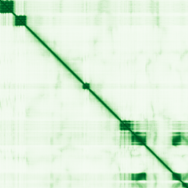
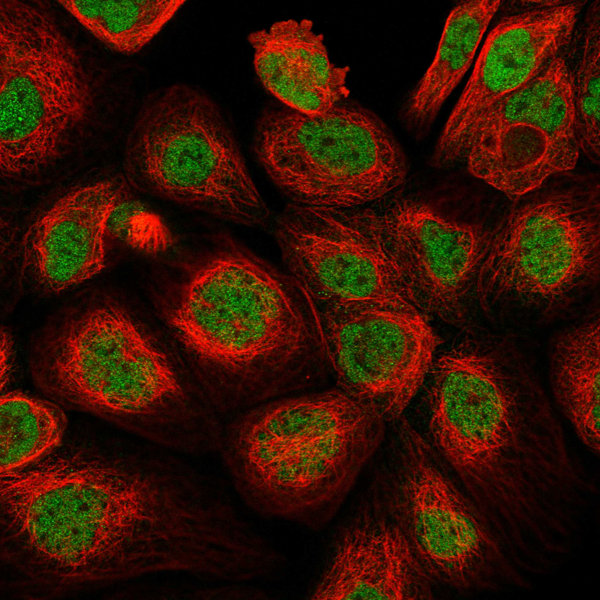

type: protein-evaluation gene: "PHF20" date: 2026-06-01 tags: [protein-scout, nucleoplasm, evaluation] status: scored ---
PHF20 核蛋白评估报告
1. 基本信息
| 项目 | 内容 |
|---|---|
| 基因名 / 别名 | PHF20 / C20orf104, GLEA2, HCA58, NZF, TZP |
| 蛋白全名 | PHD finger protein 20 |
| 蛋白大小 | 1012 aa / 115.4 kDa |
| UniProt ID | Q9BVI0 |
2. 评分总览
| 维度 | 得分 | 新权重 | 加权后 | 关键证据摘要 |
|---|---|---|---|---|
| 核定位特异性 | 8/10 | x4 | 32.0 | UniProt Nucleus (exp), GO nucleoplasm (IDA:HPA)/NSL complex/MLL1 complex, HPA Nucleoplasm |
| 蛋白大小 | 2/10 | x1 | 2.0 | 1012 aa, 115.4 kDa，大型蛋白 |
| 研究新颖性 | 6/10 | x5 | 30.0 | PubMed strict=42, broad=61 |
| 三维结构 | 5/10 | x3 | 15.0 | AlphaFold pLDDT 54.5；PDB 7 个 domain 结构（PHD/Tudor/Zn-finger） |

| 调控结构域 | 7/10 | x2 | 14.0 | PHD finger + Tudor domain (methyl-lysine reader) + Zn-finger，p53 甲基化 effector |
| PPI 网络 | 6/10 | x3 | 18.0 | NSL HAT complex (KANSL1-3, KAT8, MCRS1, WDR5) + MLL1 complex, STRONG exp+IntAct |
| 加权总分 | 111/180** | |||
| 互证加分 | +0.0 | |||
| 归一化总分 (÷1.83) | 60.7/100** |
3. 详细分析
3.1 核定位证据
| 来源 | 定位 | 可信度 |
|---|---|---|
| UniProt | Nucleus (ECO:0000269, experimental) | 高（exp 证据） |
| GO-CC | nucleoplasm (IDA:HPA), nuclear membrane (IDA:HPA), cytosol (IDA:HPA), NSL complex (IDA:ComplexPortal), MLL1 complex (IDA:UniProtKB), histone acetyltransferase complex (IDA:UniProtKB) | 高（多来源 IDA） |
| HPA IF | Nucleoplasm, Nuclear membrane, Golgi apparatus, Cytosol (Supported 可靠性) | 中-高 |
| Literature | PHF20 是 NSL (MOF) HAT 复合体和 MLL1 复合体组分，作为 methyl-lysine reader 稳定和激活 p53 | 强 |
HPA IF 状态: IF available -- HPA 可靠性 Supported，主定位 Nucleoplasm，附加 Nuclear membrane/Golgi/Cytosol。

结论: PHF20 核定位证据强（UniProt exp + GO 多 IDA + HPA Nucleoplasm），HPA 显示主要核质定位但也有附加的膜/高尔基体/胞质信号，提示非完全核专属。作为 NSL HAT 和 MLL1 复合体的组分，具有直接的组蛋白乙酰化和甲基化调控功能。
3.2 结构与数据源
| 指标 | 数值 |
|---|---|
| AlphaFold | AF-Q9BVI0-F1 |
| 平均 pLDDT | 54.5 |
| pLDDT >90 | 16.9% |
| pLDDT 70-90 | 15.5% |
| pLDDT <50 | 62.6% |
| PDB | 7 个结构 (3P8D/3Q1J/3QII/3SD4/5TAB X-ray PHD/Tudor domain; 2LDM/5TBN NMR) |
AlphaFold PAE 状态: PAE 已下载。pLDDT 均值低（54.5），<50 区域高达 62.6%，整体结构置信度不高。但 7 个 PDB 结构覆盖了关键的 PHD finger (aa 84-147) 和 Tudor (aa 4-69) 结构域，包括甲基化组蛋白结合的共晶结构。pLDDT >90 区域（16.9%）对应这些明确折叠的结构域。
3.3 研究现状
| 指标 | 数值 |
|---|---|
| PubMed strict (Title/Abstract) | 42 |
| PubMed broad | 61 |
| 别名 | C20orf104, GLEA2, HCA58, NZF, TZP（未用于 scoring） |
关键文献：
- PMID:35033534: "Methyl-lysine readers PHF20 and PHF20L1 define two distinct gene expression-regulating NSL complexes." (J Biol Chem, 2022) -- 直接研究 PHF20 在 NSL complex 中的功能分型
- PMID:22864287: "PHF20 is an effector protein of p53 double lysine methylation that stabilizes and activates p53." (Nat Struct Mol Biol, 2012) -- Nature 子刊，确定 PHF20 为 p53 甲基化 reader
- PMID:26722404: "Expression of PHF20 protein contributes to good prognosis of NSCLC." (Int J Clin Exp Pathol, 2015)
- PMID:36598702: "PHF20 is a Novel Prognostic Biomarker and Correlated with Immune Status in Breast Cancer." (Biochem Genet, 2023)
3.4 PPI 网络（三源综合）
| Partner | Source | Score/Evidence | Relevance |
|---|---|---|---|
| KANSL1 | STRING | 0.999 (exp 0.832) | NSL complex 支架亚基 |
| KANSL2 | STRING | 0.998 (exp 0.826) | NSL complex 亚基 |
| KANSL3 | STRING | 0.998 (exp 0.809) | NSL complex 亚基 |
| MCRS1 | STRING | 0.998 (exp 0.796) | NSL complex 亚基 |
| KAT8 | STRING | 0.992 (exp 0.795) | MOF HAT, H4K16ac writer |
| TP53 | STRING | 0.970 (exp 0.295) | p53 methyl-lysine effector 靶标 |
| WDR5 | STRING | 0.993 (exp 0.450) | MLL1 complex 核心亚基 |
| KAT8 | IntAct | coIP (PMID:23452852) | MOF HAT |
| WDR5 | IntAct | coIP + TAP (PMID:23452852, 27705803) | MLL1 complex |
| H3C12/H4C9 | UniProt | 6/3 experiments | 组蛋白直接互作 |
PHF20 的 PPI 网络横跨两个关键染色质调控复合体：NSL HAT complex (KANSL1-3, KAT8/MOF, MCRS1) 和 MLL1/COMPASS-like complex (WDR5, RBBP5, KMT2A)。TP53 通过甲基化依赖方式被 PHF20 识别。UniProt 记录了 H3C12 和 H4C9 的组蛋白直接互作。IntAct 确认 KAT8、WDR5、KANSL1-3 和 MCRS1 的多条实验互作。
4. 总体评价
PHF20 是一个文献量适中（strict=42）的核蛋白，最大的亮点在于调控结构域极强：同时具备 PHD finger 和 Tudor domain（均为甲基化组蛋白 reader），直接参与 NSL HAT 和 MLL1 两种染色质修饰复合体，且是 p53 双甲基化的 effector。PDB 有 7 个 domain 结构（含 methyl-lysine 共晶）。主要劣势是 AlphaFold 全长的 pLDDT 低（54.5）和蛋白偏大（115 kDa）。适合作为染色质 reader/组蛋白修饰复合体亚基方向的高质量候选。
5. 数据来源
- UniProt: https://www.uniprot.org/uniprotkb/Q9BVI0
- AlphaFold: https://alphafold.ebi.ac.uk/entry/Q9BVI0
- PubMed: https://pubmed.ncbi.nlm.nih.gov/?term=PHF20
- Protein Atlas: https://www.proteinatlas.org/ENSG00000025293-PHF20
HPA IF 图像已本地嵌入。
PAE 图像暂无数据（未生成本地图片或未可靠获取），结构判断基于AlphaFold pLDDT统计。